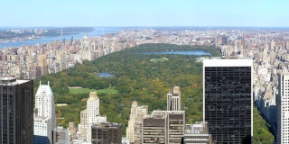
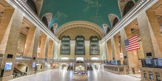
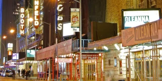

New York City
New York City
40.7128° N, 74.0060° W
the most populous metro area in North America
a major immigration gateway
a former Dutch colonial city
a city named for a duchy across the ocean
a world financial center

New York City, United States of America
New York City, United States of America
New Amsterdam
New Manchester

Statue of Liberty
Statue of Liberty
Frédéric Bartholdi
Marshall Fredericks

Central Park
Central Park
2765 acres
843 acres

Grand Central Terminal
Grand Central Terminal
42nd Street
Wall Street

Broadway Theatre District
Broadway Theatre District
Fiddler on the Roof
The Phantom of the Opera